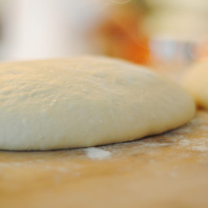

Two-ingredient pizza dough

We've all been there.. It's 2 weeks until payday and all your hard earned money is gone.
What if I told you can make a delicous pizza dough using only 2 ingredients. Look no further!
Ingredients:
- 1 1/2 cups self-rising flour
- 1 cup plain Greek yogurt
Instructions:
- Preheat the oven to 500 degrees F (260 degrees C).
- Mix flour and Greek yogurt together in a bowl to form a dough; transfer to a work surface floured with self-rising flour.
Knead dough, adding more flour as needed to keep dough from being too sticky, about 8 to 10 minutes.
- Spray a 12-inch pizza pan with cooking spray and spread dough to the edges of the pan.
- Bake pizza crust in preheated oven for 5 to 7 minutes; add your favorite toppings and return to the preheated oven. Bake until crust is lightly browned, 5 to 7 minutes more.